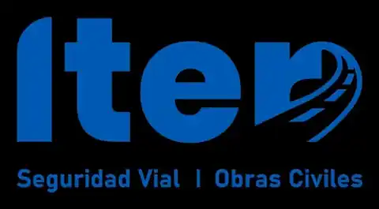

Copa FUFY 2026
Primera Copa Internacional FUFY, realizada el 24 de octubre de 2026 y organizada por Gigantes de Azapa en memoria de Álvaro Villanueva. Conservamos aquí la historia de una jornada de rugby, amistad y tradición Classic.
Primera Copa Internacional FUFY, realizada el 24 de octubre de 2026 y organizada por Gigantes de Azapa en memoria de Álvaro Villanueva. Conservamos aquí la historia de una jornada de rugby, amistad y tradición Classic.
El sábado 24 de octubre vivimos esta edición en el Estadio Carlos Dittborn de Arica. Sus afiches originales quedan disponibles como registro de la convocatoria.


La Copa FUFY ya se disputó. Agradecemos a los clubes participantes, jugadores, entrenadores, voluntarios, familias y auspiciadores que hicieron posible este encuentro en memoria de Álvaro “Fufy” Villanueva.
Las bases, el programa y los materiales de convocatoria se mantienen publicados como archivo de la edición 2026. No constituyen una nueva invitación ni una inscripción abierta.
Primera Copa Internacional FUFY 2026 · Rugby de tradición y amistad. Cuatro equipos y seis partidos, todos contra todos. Una jornada dedicada a recordar a Álvaro Villanueva, cuyo programa se conserva para consulta histórica.
Sábado 24 de octubre de 2026
📍 Estadio Carlos Dittborn, sector cancha de rugby, Arica.
4 equipos · 6 encuentros · 3 por equipo. Liga a una rueda, clasificación única y campeón por puntos. No habrá semifinales ni finales.
Partidos de 30 minutos de juego en dos tiempos de 15, con entretiempo de 10 minutos. Noventa minutos de rugby por equipo durante la jornada, con pausas de recuperación entre encuentros.
Victoria 4 puntos, empate 2 y derrota 0, sin bonus. Se premiará al campeón, subcampeón, tercer lugar y espíritu deportivo.
Jugadores que cumplan 35 años o más durante 2026. Hasta 25 inscritos por club, con acreditación e identidad vigentes. Primeros auxilios provistos por la organización.
Rugby XV, protección bucal, regulación Master/Classic, chequeo de salud y medidas especiales para jugadores mayores. La ambulancia y la cobertura médica deben estar operativas antes de iniciar.
La programación Classic sigue el Anexo 1 de las Bases Definitivas del 23 de octubre. Son seis partidos de 45 minutos por bloque: dos tiempos de 15 minutos, entretiempo de 10 y transición de 5. Los eventos infantiles y Mixed Ability requieren validación de seguridad.
Premiación durante el tercer tiempo en Bar República, no en el estadio. El horario de inicio del tercer tiempo es referencial.
Sábado 24: seis partidos infantiles en dos tandas de tres encuentros simultáneos y una exhibición Mixed Ability paralela a la primera tanda. M14 ocupa una mitad completa de la cancha. La otra mitad se divide en tres sectores para M10, M12 y Mixed Ability simultáneo con la primera tanda infantil. Cada encuentro contempla dos tiempos de 10 minutos y descanso de 2 minutos. Sujeto a confirmación de entrenadores, rivales y seguridad.
Tres encuentros infantiles simultáneos: M14, M10 y M12, más Mixed Ability en el cuarto sector de 11:20 a 11:45.
Hidratación, seguridad y preparación de los siguientes rivales.
Otros tres encuentros simultáneos: M14 n.º 4, M10 n.º 5 y M12 n.º 6.
Despeje de cancha, saludo deportivo y formación del pasillo generacional para la inauguración.
Bloque principal 12:22–12:57, tras las dos tandas del festival infantil. La presencia de invitados y las intervenciones se anunciarán solo cuando la organización las confirme.
Bienvenida, presentación de clubes, categorías infantiles y auspiciadores.
Homenaje central a su memoria y legado deportivo.
Reseña y protocolo sujetos a validación.
Reconocimiento deportivo, presencia y material audiovisual por confirmar.
Fotografías autorizadas, agradecimientos y despeje seguro del área.
Empanadas, chaparritas, bebidas, roscas, helados y rolls de sushi. Precios y ofertas publicados en la sección de ventas.
Consulta los marcadores y eventos de los partidos conservados por la mesa de control. Los registros públicos pueden estar sujetos a revisión por la organización.
Consultando los partidos del campeonato…
Tries, conversiones, penales, drops y tarjetas registrados por la mesa.
Los marcadores y eventos pueden ajustarse cuando la mesa de control corrige un registro. Los resultados oficiales están sujetos a revisión de la organización.
Mesa de control · Acceso de operadores →El programa de la edición 2026 contempló premiaciones, reconocimientos y el premio Espíritu Álvaro Villanueva durante el tercer tiempo en Bar República. Se conserva aquí la planificación original de la jornada.
Los cuatro equipos y el Espíritu FUFY serán reconocidos durante el tercer tiempo.
Bar República recibirá a jugadores y dirigentes. Los puestos de comida estarán disponibles durante el campeonato.
Archivo de las opciones y precios de las ventas organizadas para el sábado 24 de octubre. Esta información corresponde a la edición pasada y no representa una venta actualmente abierta.
Gracias a quienes colaboraron con las actividades deportivas del club durante la Copa FUFY 2026.
La operación médica se organiza con una zona médica visible, acceso libre para ambulancia y protocolo de respuesta documentado.
Zona médica/recovery con botiquín completo, camilla, hielo médico separado del hielo de consumo y acceso rápido a cancha.
El acceso de ambulancia debe mantenerse despejado durante toda la jornada. La cobertura externa está en proceso de confirmación formal.
Ante sospecha de conmoción o lesión relevante, el árbitro detiene el juego y el coordinador médico asume el mando clínico.
Mesa registra hora, jugador, equipo, motivo, destino y responsable cuando exista atención o traslado.
Consulta el plano de la cancha de rugby del Estadio Carlos Dittborn: ingresos, tribunas, mini rugby, mesa de control, asistencia médica y zona de comidas.

El plano indica los accesos para público y las tribunas norte, este, oeste y sur.
Los puestos de alimentación, la mesa de control, los baños y el sector de atención médica están señalizados.
Gigantes de Azapa Rugby Club agradece a todas las marcas que acompañan la Primera Copa Internacional FUFY 2026. Cada logo corresponde a un archivo original y se muestra en un recuadro del mismo tamaño. Toca una marca para conocerla.
 Aguas Don DinoAgua y alimentos
Aguas Don DinoAgua y alimentos
 Centro Ortopédico AstorOrtopedia y biomecánica
Centro Ortopédico AstorOrtopedia y biomecánica
 Empresas AuditaxServicios empresariales
Empresas AuditaxServicios empresariales
 Centro Eléctrico DNGElectricidad e ingeniería
Centro Eléctrico DNGElectricidad e ingeniería
 Arquitectura MásArquitectura y construcción
Arquitectura MásArquitectura y construcción
 Cárdenas InmobiliariaSector inmobiliario
Cárdenas InmobiliariaSector inmobiliario
 Clínica Sonríe AricaOdontología y salud
Clínica Sonríe AricaOdontología y salud
 La PampinaPanadería artesanal
La PampinaPanadería artesanal
 CDS Inmobiliarios y ConstrucciónInmobiliaria y construcción
CDS Inmobiliarios y ConstrucciónInmobiliaria y construcción
 Confinor MRConfites
Confinor MRConfites
 Arte y CarpinteríaCarpintería
Arte y CarpinteríaCarpintería
 Pronet TelecomunicacionesTelecomunicaciones
Pronet TelecomunicacionesTelecomunicaciones
 K-SportSalud y rehabilitación
K-SportSalud y rehabilitación
 Terminal Puerto Arica (TPA)Logística portuaria
Terminal Puerto Arica (TPA)Logística portuaria
 Sushi LoungeAlimentación y delivery
Sushi LoungeAlimentación y delivery
 Constructora CPCConstrucción
Constructora CPCConstrucción
 República de AricaCafé y restaurante
República de AricaCafé y restaurante
 Farmacias del Dr. SimiFarmacias
Farmacias del Dr. SimiFarmacias
ITER SpASeguridad vial y obras civiles · Aporte de pintura para demarcar la canchaConocer a nuestros auspiciadores →
🖼️ Ver y compartir el flyer de agradecimiento a los 20 auspiciadores ↗
Los enlaces externos se incluyen únicamente cuando corresponden a sitios oficiales identificados.

Esta copa nace para mantener presente a un compañero de larga trayectoria, amigo y parte de la historia del club. Álvaro falleció durante el calentamiento previo a un partido. Su recuerdo permanece unido al rugby, a sus compañeros y a la amistad que se construye dentro y fuera de la cancha. Cada edición de la Copa FUFY busca que su nombre siga reuniéndonos alrededor de los valores que compartió con nosotros.
 🏉 Afiche original de la convocatoriaConoce y comparte el afiche de la edición realizada.
🏉 Afiche original de la convocatoriaConoce y comparte el afiche de la edición realizada. 🏆 Afiche oficial y colaboradoresConoce la fecha, el homenaje y las marcas que apoyan el encuentro.
🏆 Afiche oficial y colaboradoresConoce la fecha, el homenaje y las marcas que apoyan el encuentro.